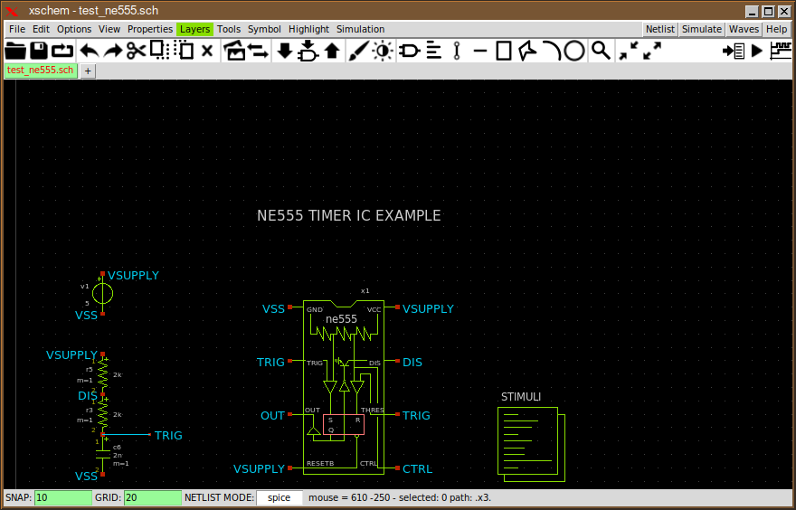
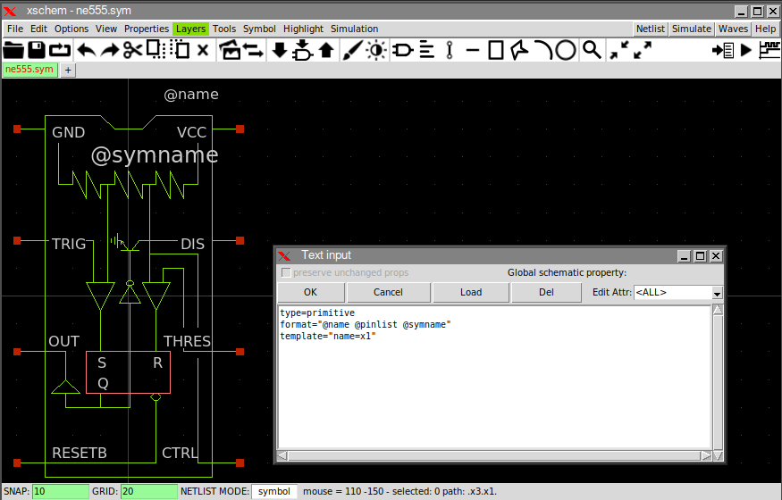
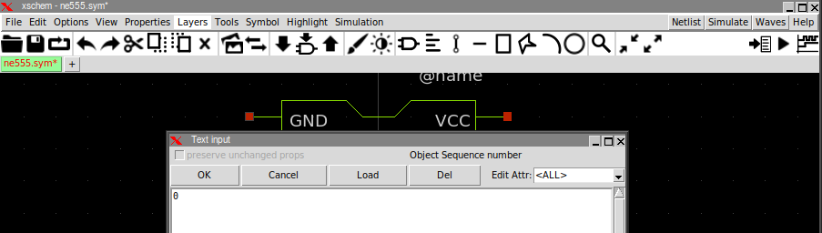
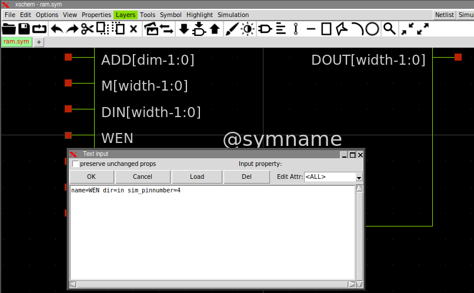
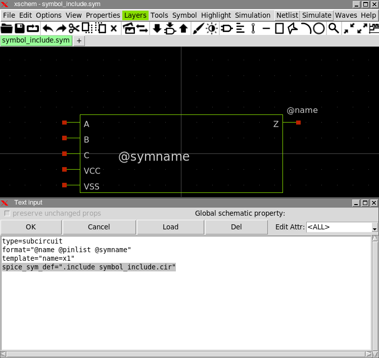
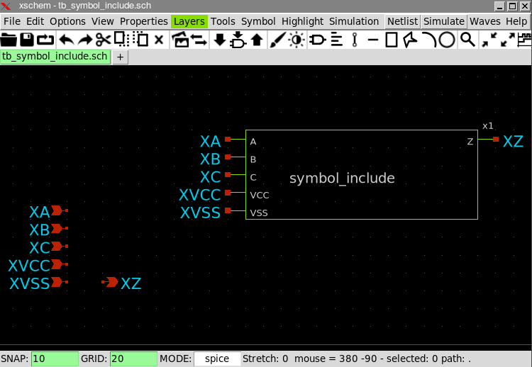
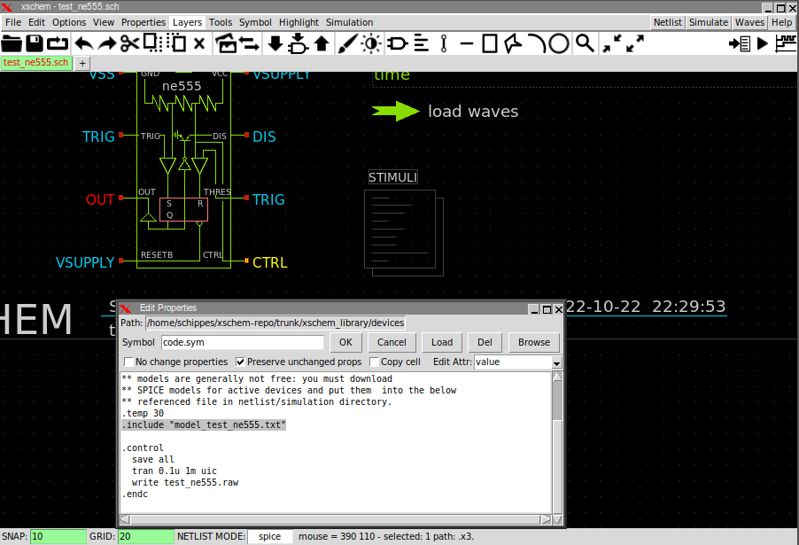
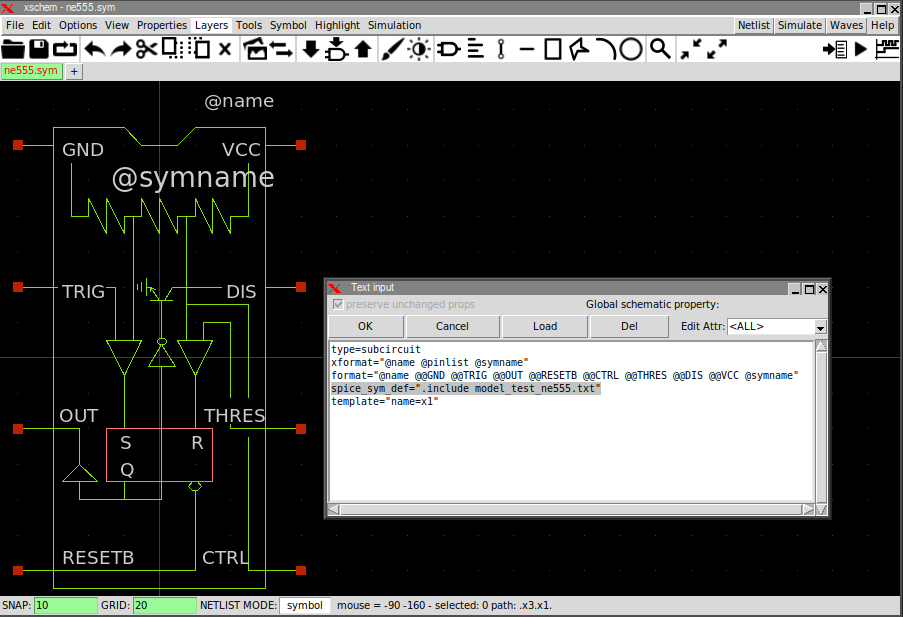

TUTORIAL: CREATE A SYMBOL AND USE AN EXISTING NETLIST
In some cases you have an existing netlist for a circuit block, perhaps from a previous design or from a layout parasitic netlist extraction. In order to use this netlist in your design you might consider creating a symbol for it in xschem. This symbol should match the I/O interface and name of the block netlist and does not need to have a corresponding schematic since we want to use the existing netlist. One such example in the standard xschem distribution is the test_ne555.sch circuit. The test schematic contains a symbol for the popular NE555 timer. The symbol does not provide any implementation, the implementation is included in the top design as a .subckt netlist.
The symbol is implemented in the following way: the symbol attributes are:
type=primitive format="@name @pinlist @symname" template="name=x1"
the primitive value for the type attribute (instead of the more used subcircuit for symbols with a corresponding implementation schematic) tells xschem to generate only the instance calls (the X lines for spice netlists) and not descend into the symbol and not generate a .subckt for it.
The @pinlist is expanded into the netlist to the list of I/O ports. The order of the ports in
this case is the order these pins are created in the symbol. If you click a pin (the small red square box)
a " n = <number>" appears in the status line. This is the index of the pin. The first
created pin starts from 0.
-
Changing the pin ordering by altering the object sequence number
You can change the order the pins are stored into the .sym file. Start by clicking the pin that you want to have first in the netlist, then press Shift-s, set the number to 0.
This will put the selected pin in first position. Then move to the pin you want in second position, repeat above steps and assign to it index number 1, and so on for all the symbol pins. At the end save your symbol and this will be the pin ordering in netlists. When netlist is produced this order will be used. If left pins in above example have sequence numbers of (starting from the top) 0, 1, 2, 3 and right pins have sequence numbers (starting from the bottom) 4, 5, 6, 7 the instance line in the netlist will be (check the net names with the schematic in the first image above):
x1 VSS TRIG OUT VSUPPLY CTRL TRIG DIS VSUPPLY ne555
-
Changing the pin ordering by using the sim_pinnumber attribute
If all symbol pins have a sim_pinnumber attribute this symbol will be netlisted (in all netlist formats) with pins sorted in ascending order according to sim_pinnumber value. Start value of sim_pinnumber does not matter (may start at 1 or 0) , it is used as the sort key. You can assign the sim_pinnumber attribute directly in the symbol...
... Or you can assign these in the schematic pins, if you use the Make symbol from schematic function ('a' key) these attributes will be transferred to the symbol. The sim_pinnumber attributes that determine the netlist port ordering are those defined in the symbol.

For sorting to happen all symbol pins must have a sim_pinnumber attribute. If some pins miss this attribute no sorting is done and pin ordering will be unchanged, the stored order of symbol pins will be used (first created pin netlisted first). If there are duplicate sim_pinnumber attributes (but all pins have this attribute) sorting will happen but relative ordering or pins with identical sim_pinnumber is undefined.
As an example you may give sim_pinnumber=9999 on a symbol output and sim_pinnumber=1 on all other pins if you only require the output pin to be netlisted at the end and don't care about the other pin ordering. -
Explicitly specify port ordering in format (or verilog_format or vhdl_format) string
Instead of the following format string that defines the netlist instance line syntax:
format="@name @pinlist @symname"
You can use the following:
format="@name @@GND @@TRIG @@OUT @@RESETB @@CTRL @@THRES @@DIS @@VCC @symname"
In this case you specify the port order one by one explicitly. This can be used for spice primitive devices, spice subcircuits (like this example), VHDL and Verilog primitives. This method can NOT be used for VHDL and verilog subcircuits since for these you do not provide a vhdl_format or verilog_format string. For these use one of the first two methods. In general for VHDL and Verilog port order is not important since port-net association is named and not positional.
-
Obtaining the pin ordering from the subcircuit definition specified via spice_sym_def
For spice netlists if @pinlist is specified in format string and a symbol spice_sym_def attribute is used then the order of the symbol ports will be obtained from the .subckt specified by spice_sym_def, either directly or via a .include statement
The symbol_include.cir file has the following content:
* example of a subcircuit contained in a file .subckt symbol_include Z VCC VSS + A B C W=10 L=1 ... ... .ends
And as a result the following circuit:
is netlisted in the following way, notice the net assignment in the x1 subcircuit call matches the order in the symbol_include.cir file:
** sch_path: /home/schippes/.xschem/xschem_library/symbol_include/tb_symbol_include.sch **.subckt tb_symbol_include XZ XVSS XVCC XC XB XA *.opin XZ *.ipin XVSS *.ipin XVCC *.ipin XC *.ipin XB *.ipin XA x1 XZ XVCC XVSS XA XB XC symbol_include **.ends * expanding symbol: symbol_include.sym # of pins=6 ** sym_path: /home/schippes/.xschem/xschem_library/symbol_include/symbol_include.sym .include symbol_include.cir .end
Specifying subcircuit netlist
Add a .include <file> line in the top level
The first method is to declare the symbol as type=primitive (this is the case in all images above) and simply add a .include /path/to/subcircuit.spice in the top level netlist:
Use a spice_sym_def=".include <file>" line in the symbol
The second method is to declare the symbol type as subcircuit and add a spice_sym_def attribute in the symbol. the value of this attribute will be copied verbatim to the netlist, so for the example shown here this should do the job:

spice_sym_def=".include model_test_ne555.txt"
The produced netlist will be:
** sch_path: /home/schippes/xschem-repo/trunk/xschem_library/examples/test_ne555.sch **.subckt test_ne555 x1 VSS TRIG OUT VSUPPLY CTRL TRIG DIS VSUPPLY ne555 ... ... * expanding symbol: ne555.sym # of pins=8 ** sym_path: /home/schippes/xschem-repo/trunk/xschem_library/examples/ne555.sym .include model_test_ne555.txt .end
The advantage of this method is that the reference of the subcircuit is embedded in the symbol and if the symbol is reused in another design the .include line travels with the symbol and you don't have to add the line in the top level.
Specify the subcircuit in the spice_sym_def attribute
instead of including yhe file specify the subcircuit directly into the spice_sym_def attrinute.
spice_sym_def=" .subckt symbol_include Z Y[5] Y[4] Y[3] Y[2] + VCC VSS + A[2] A[1] A[0] B C W=10 L=1 ... ... .ends "
Completely specify a subcircuit in the format attribute of the symbol
The following set of symbol attrtibutes:
type=source format="X@name @@in @@out sub_@name .subckt sub_@name in out @name out 0 V=@func .ends sub_@name" template="name=B1 FUNC="pow(V(in),2)""
will create a sub_xxx subcircuit with a unique name for every symbol instance using the @name attribute (which is indeed unique). This allows to build subcircuits with arbitrary parameters (a math expression in the example).
The problem of this approach is that it works by creating nested .subckt inside the parent schematic (which could itself be a .subckt). Not all simulators support this (although Ngspice and Xyce seem to work OK with this).